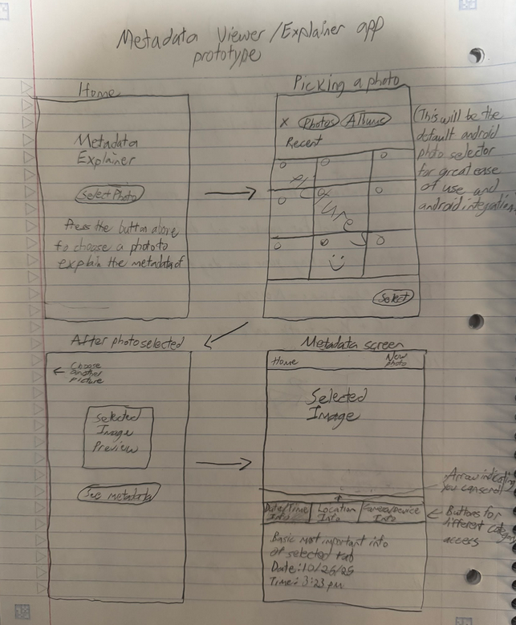
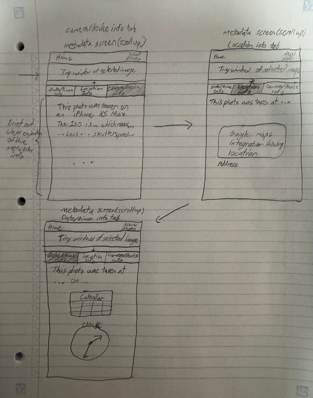
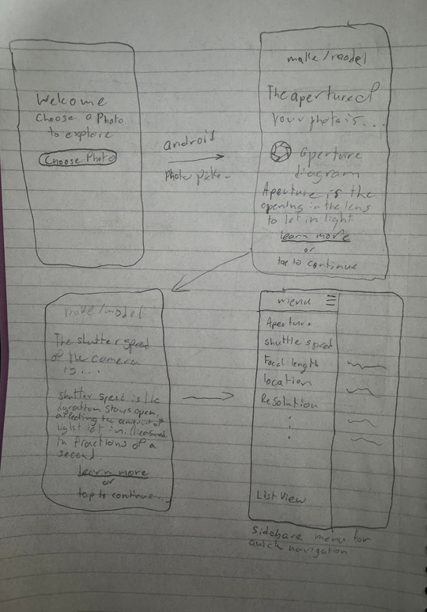

Metasplainer
Understand your photos.
After looking studying many metadata tools and apps, we found they all have the same problem. They don't actually explain what the information means. That is why my brother and I created an app that explains the metadata to users who are unfamiliar with this information.
Nonfunctional Prototypes



User Studies
We conducted two user studies at different stages in our development. The first study concluded with users liking both designs, the first for its quality design and the second for its ease of use. This is why we decided to incorporate both prototypes into the final product. The second user study had users wanting more information displayed when our functional prototype only had date, time, and location. The also asked for larger fonts and a more interesting design.